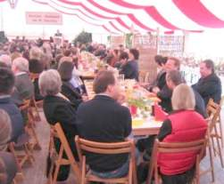
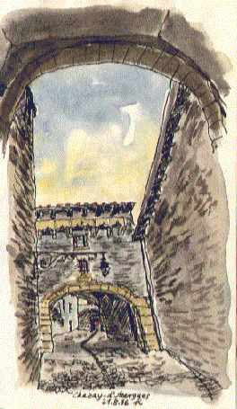

Fachtagung: Finanzierungsstrategien für Kultureinrichtungen in Deutschland
Für Museen, die mehr wollen als im Keller Sammlungen zu sichten, digitale Inventarlisten zu schreiben und unverkäufliche Publikationen mit geringstem Neuheitswert auf den Markt zu werfen. Wenn das Museumscafe mehr sein soll als eine schicke Mitarbeiterkantine und der Museumsshop mehr als eine Gratwanderung zwischen Volksbildungswerk und Museumskrawattenständer. Und für alle, die nach Alternativen zum Betütteln eitler Sponsoren suchen.
Mittlerweile [...] die meisten Museen wieder leer [...] Zuschauerreihen in den Qualitätstheatern lichten sich. [...] Tanztheater hat mit seinem rabiaten Dilettantismus der Nackten und der Hässlichen die Kunstdisziplin zerstört [...] das kompetente Publikum vertrieben. Kulturprivilegierte gibt es nicht mehr. Bayreuth und Salzburg sind ganz für die Geldprivilegierten reserviert und somit von Kultur befreit. Hemmschwellen nach außen braucht es vor allem, weil Hemmschwellen für innen notwendig sind, nämlich für die Künstler.
Es gibt zu viele von ihnen, die, im Bund mit der Meute der Zwischenhändler, sich von den hemmungslosen Konsumenten korrumpieren lassen und Schlechtes liefern. Man muss heute durch Unmassen von Kulturmüll waten, wenn man gute Qualität erleben will. Das aber kann nicht in genügsamer Einsamkeit geschehen. Darum sind die leeren Museen zwar wieder ein Genuss für Kenner, zugleich aber, weil ohne Publikum, deprimierend."
Die im Sommer 99 öffentlich gewordene Verbreitung von Kulturdreck als CIA-Projekt seit den 50ern (vgl. hierzu Franz Krahberger: "The Masterminds") hat allen Kulturinteressierten wieder mal bewiesen, daß 1. Alles Gute dieser Zeit von den USA kommt, und 2. Nix von nix kommt. Aber jetzt zum Geld:Wolfgang Görl: "Köfferchen voller Konzerte, Mehr Manager als Künstler - Wie man lernt, Kultur zu verkaufen", Süddeutsche Zeitung Nr. 94, 24.4.1999 - Auszüge
"Ausgerechnet Frankfurt, ausgerechnet Hindemith. Für Wolfgang Ogrisek [...] Samstagmorgen voll kniffliger Fragen [...] Aufgabe? Konzipieren Sie für [...] Frankfurt ein Paul-Hindemith-Festival [...] daß jeder merkt: Oha, in Frankfurt weht aber ein fortschrittlicher Geist. Dafür spendiert der Kämmerer sieben Millionen Mark, auch die Banken lassen etwas springen. [...] Imageförderung ist angesagt.[...] Sonst machen die Sponsoren nicht mit.[...] Wer war Hindemith, was hat er mit Frankfurt zu tun, wie steht´s mit seiner Aktualität? [...] Hindemith, 1895 in Hanau geboren, hat in Frankfurt gewirkt und galt in der Tonkunst als Radikaler; später das Exil [...], am Ende zurück nach Frankfurt, wo er 1963 starb. Das reicht [...] zum Hindemith-Standort [...] Exil und Moderne wären zwei Stichworte, mit denen man bei Publikum und Sponsoren Eindruck schinden könnte. "Originelle Lügen" (Ogrisek), um die Geldgeber gnädig zu stimmen, sind möglicherweise überflüssig.
[...] Leichtsinnig [...], wer bloß ein Konzert oder eine Ausstellung anböte [...]. Jede Veranstaltung muß ein Event werden [...]. Der Kulturmanager verkauft Kultur. Dafür muß er was biete [...] wofür der Kunde sein Geld locker macht und auf den Fernsehabend verzichtet. Von Kunst ist dabei nicht so sehr die Rede; vielmehr von "entertain, educate and edify". [...] Einführungsvorträge [...] Parallelveranstaltungen [...] Rahmenprogramm für Kinder [...] ordentliche Getränke, gutes Essen, saubere Toiletten. (Wenn der) Dirigent oder die Schauspieler in Form sind, kommen die Leute wieder.
"Event" [...]eine Art Zauberwort [...], mit dem man das Wunder schafft, Menschen ins Konzert, ins Theater, ins Museum zu bringen. Auch Christoph Vitali gebraucht es. Hier, im Haus der Kunst, beim Seminar "Ausstellungs- und Museumsmanagemanet", hat er ein Heimspiel. An den rotbespannten Wänden [...] Meisterwerke aus 500 Jahren. [...] genug [...] die Leute anzulocken. "Wir müssen versuchen, das Publikum zu umarmen", sagt Vitali. Abends [...] müsse man die Museen öffnen. Auch gegen ein "Event im Haus" sei nichts einzuwenden [...] Konzert nach Mitternacht oder ein Fest. [...]
[Beispiel USA:] Einnahmen müssen her, und sei es vom Markt der Geschmacklosigkeiten. Besucher einer Cézanne-Ausstellung finden im Museums-Shop Baseballkäppis mit Motiven des Künstlers [...] Nudeln in Form von Rodin-Plastiken [...] zumindest attraktiv gestaltete Tüten. Alles okay, solange es Geld bringt. [...]
[...] Michael Herrmann beim INK-Seminar "Festivalmanagement". [...] Um [teure Künstler] zu bezahlen, geht er hausieren. Im Köfferchen [...] Liste mit Konzerten in allen Preisklassen [...] bei einer Anne-Sophie-Mutter wird der Käufer einen sechsstelligen Betrag hinlegen müssen. Dafür prangt das Firmenlogo des Sponsors [...] im Programmheft, Hinweistafeln [...] am Eingang [...] respektable Menge Ehrenkarten. [...] "Viele sagen: Es ist uns eine Ehre."
[...] Kulturmanagement [...] moderne Form des Bettler- und Hausierertums sowie anderer Geldbeschaffungsmethoden unterhalb der Schwelle zum Bankraub. [...] Mäzene: Sie wollen bloß Gutes tun, und sei es für Kunst. Spender [mahnen] steuerlich wirksame Spendenquittung (an). Sponsoren wollen eine Gegenleistung: Werbung [...] dem Image und der Corporate Identity dienlich [...]. Ganz schwierig ist es mit den Kämmerern. [...] gezwungen zu sparen. Sieben Millionen für Hindemith - das gibt´s nur im Spiel. [...]
Alles richtig. Und wichtig aus meiner Sicht:2. Giganten der Lotto-, Geld- und Versicherungsbranche, Quasi- bzw. Möchtegern-Monopolisten der Energie-/Wasser-/usw.-Fraktion sind effektivere Gesprächspartner für Sponsorenanfragen als örtliche Metzgermeister und Handwerksfirmen.
3. Sponsorship auf Dauer anlegen. Das fordert Höflichkeit, Händchenhalten, Platzwarmhalten und treue Nachsorge. Sponsoring ist auch der Wunsch nach Kommunikation. Solche "Gespräche" dürfen nicht einfach abgebrochen werden. Das einfachste für den Kulturmanager ist ein treuer Sponsor.
4. Kein Sponsorenfriedhof. Sponsoren lieben es nicht, neben Konkurrenten zu sponsorieren. Also Branchenmix bzw. Konzentration auf einen Hauptsponsor.
5. Gutes Angebot. Sponsoring erfordert unbedingte Gegenleistung. Das muß nicht unbedingt ein fußballtorgroßes Gerüstplakat mit dem Sponsorenlogo sein - da gibt es sehr viele und im Sinne des Sponsors besser funktionierende Möglichkeiten, die der Gesponsorte sein eigen nennt. Nur weiß Letzterer das oft gar nicht, weil er vom Sponsoring nix versteht. Da liegt dann der Hase im Pfeffer.
6. Deutschlands Nachkriegsvermögen wollen vererbt werden. Wie wär´s mit der Suche nach reichen Erbschaften, die sich in Kulturstiftungen verewigen wollen? Die diesbezüglichen Strategien kann man von der Deutschen Stiftung Denkmalschutz trefflich lernen. Herzerweichende Monatsbriefchens, schauerliche Baunotfälle in rührendster Journalistik dargeboten. Löbliche Berichte von edlem Spendertum. Tränenabdrückerei, Nostalgie- und Notzeitenschmonz. Kindchen-, Arm-ab, Krücken- und Rollstuhlschemata geben das Vorbild für den heftigen Apell an das Gute bzw. das schlechte Gewissen im Mitmenschen. Hut ab vor derartig tiefen und funktionierenden Einblicken in das deutsche Spenderherz! Stiftung/Foundation!! Denken wir mal an die Finanzierung des historischen Kirchenbaus und seiner Ausstattung. Was da aus Erbschaften und "Donationen" floß! Leider betreibt die Kirche diesbezüglich erforderliches Gesülze und überirdische Panikmache nicht mehr so professionell wie einst. Vielleicht fehlt´s ja hier und da auch an der richtigen Einstellung. Lesbenhochzeiten und Kriegstreiberei sind vielleicht mehr trendy. Ob das aber Spenderhirne und -herzen genug bewegt und die Hüttchen dauerhaft zusammenhält? Und die Kanzelbesetzung sichert? Gottseidank gibt´s für letzteres ja Pfarrer aus der dritten Welt:
Obermain-Tagblatt 30.4.1999Zum Abschluß eine kleine Weisheit meines Schwiegervaters Prof. Rudolf Bohren, seines Zeichens evang. Theologe und Predigtlehrer:
"Das Zeitalter der Aufklärung muß erst noch kommen: Ein Zeitalter ohne Vormünder und Entmündigte, eine radikale Aufklärung, in dem keines Wissen und Verstand mit Finsternis umhüllet ist. [...], sind doch die Kirchentümer wie die Fakultäten behaftet mit einem Mangel an Erkenntnis und also einer unvollendeten Aufklärung. Der Nachholbedarf an Aufklärung ist allenthalben größer als wir uns vorstellen."So fangen Märchen an: Es war einmal, als die Staatsknete noch für unsere Politiker und die Kultur ausreichte ... - Das ist offenbar vorbei, "die Wirtschaft" ist nun zuständig, hier kräftiger zu unterstützen. Natürlich tut sie das nie ohne Gegenleistung. Das muß man wissen: Wirtschaftskapitäne huldigen nicht der christlichen Seefahrt. Oder - denkt man an das System Pizarro, vielleicht doch?
Obermain-Tagblatt 24.11.1999"Wirtschaft soll mehr Kultur sponsoren
BERLIN. Kulturstaatsminister Michael Naumann (SPD) hat bei der Bundesvereinigung der Deutschen Arbeitgeberverbände um neue Geldquellen für die Kultur geworben. Er forderte die Wirtschaft zu einem "offensiven Kultursponsoring" auf, wie [...] im Sport [...]. [...] Zusammenwirken von Staat und Wirtschaft in einem ausgewogenen Verhältnis zwischen Ereignissen mit Eventcharakter und stetiger Kulturarbeit könne [...] vielfältiges Kulturleben fördern. "Politik ohne Kultur ist unfrei, sprachlos und ohne Sinn."Die geplante Änderung des Stiftungsrechts soll [...] steuerliche Anreize zum "Kultur-Stiften" geben,.... Steuerliche Hemmnisse sollten beseitigt und "neue Möglichkeiten für Mäzene, Stifter und Kultursponsoren" eröffnet werden."
Na, wenn das "der Kultur" nur wirklich hilft. Im Land der unbegrenzten Möglichkeiten dient das Stiftungswesen bekanntermaßen vorwiegend dazu, reichen Pinkeln das weltweit zusammengeklaubte Geld vor der Steuer zu retten und durch wohldotierte Stiftungsposten der gierigen Politikerclique angenehme Oasen zu sponsorieren. Dafür hat dann der Staat zwar nicht mehr Geld mehr für "Kultur", der "Wirtschaft" bleibt dann aber mehr übrig, um den US-Wahlkampf zu dotieren. Das kostet, die Demokratie. Immerhin kommt dabei allerbeste Kultursensation raus. Das mögen höchstens altchristliche Dummheinis net:Chris Ofilis "Holy Virgin Mary". Ofili verwendete für seine Darstellung der Jungfrau Maria unter anderem Elefantendung und Fotos weiblicher Geschlechtsteile.
[...] Die Ehefrau [des Attentäters] gab später an, dass ihr Mann als strenger Katholik gegen "Gotteslästerung" habe protestieren wollen. Den Elefanten-Kot und die Ausrisse aus Porno-Magazinen auf dem Bild habe er für frevelhaft gehalten. Am Morgen der Tat habe er gesagt: "Das soll das Bild der Mutter Jesu sein, ich werde hingehen und es reinigen."
So ein Dummkopf. Dabei weiß doch heute offenbar jeder Neger, was es mit dem "logos spermatikos", dem "göttlichen Eros" und der "creatio continua" in den Bildelementen der abendländischen Kunstwerke wirklich auf sich hatte - vor allem, wenn er als "Chris" getauft und als ehrenwerter Meister der Künstlergilde ausgebildet wurde. Und war nicht der Hl. Lukas der Erste Madonnenmaler? Allerdings waren die mehr oder weniger heiligen alten Pinselschwinger noch nicht so gerissen, das vor Jedermanns Augen zu enthüllen. Doch heute, im allseits gelobten Zeitalter der Aufklärung, muß das wohl durchgehen.So empfehlen wir die künftigen wirtschaftsfeindlichen Sensationsauftritte von Schlingensief mit Meir Mendelssohn sowie Faßbinders "Der Müll, die Stadt und der Tod" vor dem geneigten New Yorker Publikum - wo doch die Kulturbanausen in Deutschland und Tel Aviv sowas nicht durchgehen lassen wollen. Wir schlagen auch den islamischen Religionsstifter und vielleicht ´nen siebenarmigen Thoraschrein mit Schläfenlocken als nächste Opfer vor für Ofilis schwarze Kunst. Und ein heißer Tipp unter Kollegen: Für sowas bieten auch Ochs und Esel gute Kacke mit Brunz. Und sogar das Wüstenkamel. In London bekommt Ofili dann wenigstens, was ihm gebührt: Den Turner-Kunstpreis (s.u.).
Weitere Info zur SENSATION-Ausstellung (z.T. mit Abbildung des wunderschönen Elefantendung-Kunstwerks):
Ofili + Werke[...] Die Idee eines modernen Mäzenatentums des Augsburger Künstlers Klaus Zöttl ist bislang weltweit einmalig[...]. Der Künstler packte [...] Korrosionsmaterial, Staub und Schmutz(teilchen) [...] die [...] bei der Restaurierung der Augsburger Renaissance-Brunnenfiguren Augustus, Herkules und Merkur anfielen, in Glasröhrchen, ließ je drei Röhrchen in einen Ahornholzblock ein und nannte das Gesamtkunstwerk "particula". [...]
Die im Sinne von Joseph Beuys "sozialen Plastiken" werden nun von Klaus Zöttl und sieben städtischen Kunstpreisträgern veräußert, die sich zu einem gemeinnützigen Verein zusammengeschlossen haben. [...] 1000 Mark [...] pro "particula" [...] - Spenden [...] muss der "Förderverein für zeitgenössische Kunst e.V." nicht versteuern.
Von den Zinsen [...] werden dann [...] Werke [...] bedeutender Künstler aufgekauft, um so eine Sammlung "nichtpopulistischer" Kunst zu beginnen. [...]"
Ja du meine Güte, wie tief wird sich die "nichtpopulistische Kunst" denn noch erniedrigen? Wenn schon Leichenfledderei, warum nicht gleich als sparsame Berührungsreliquie? Oder gleich ein bisserl Dreck von Werweißwoher, Hauptsache offiziös zum rostigen Heilixblechle zertifiziert? Dann muß es nicht bei "150 solcher Objekte" von modernen Abstaubern für "Sozialplastik"-Fans bleiben. Darf man "Abstauber" zu solchen Künstlern sagen?Doch nun zu den Sponsoring-Links:
Stiftung zur Bewahrung kirchlicher Baudenkmäler in Deutschland
Aufmachung beispielhaft, Spende empfohlen! Wenn wir Christen vielleicht auch nicht den modernsten "Glauben" haben, wissen wir
zumindest eines: Unser Verein hat die schönsten Vereinsfeste und -hütten
(vorzugsweise die gammeligen Baudenkmale unter ihnen, selbstverständlich),
die sogar Heiden oder gar Materialisten/Atheisten/Wissenschaftsgläubigen
offenstehen. Meist sogar ohne Eintrittsgeld . Wie lange noch? Helfen Sie
mit zur Erhaltung abendländischer Kulturumwelt auch über das
Morgen hinaus und lassen Sie den Klingelbeutel mal klingeln. Was wäre
Osterhasi, Pfingstochs, Weihnachststreß und Silvestertrubel ohne Glockengeläute? Na sehen Sie!
http://www.kultursponsoring.de/
Fachverband für Sponsoring und Sonderwerbeformen
www.public-sponsoring.de
www.sponsor-service.de/stex/Kultursponsoring/Kultursponsoring.htm
- Sponsor - Service, die Sponsorbörse im Internet mit tausenden von Kontaktadressen.
kultur plus: Kooperationsangebote für Mäzene
www.doemich.de/kultursponsor_inhalt.html - Kultursponsoring im Internet - Sponsoring beruht auf Leistung
und Gegenleistung mit dem Zweck, die jeweiligen Zielsetzungen von Sponsoringgeber und –nehmer effektiver zu erreichen.
Contrib.Net-Art, Culture & Media
Fachverband Sponsoring mit Publikationen zu Kultursponsoring
Verwandte Themen: Sozialmarketing, Spenden, Betteln (keine Zigeunerlinks!) und Fundraising -
Bundesarbeitsgemeinschaft Sozialmarketing BSM - Deutscher Fundraising Verband e.V.: Fragen rund ums Sozialmarketing/FundraisingDie originellsten Geschenktipps aus Hochglanzmagazinen [...] auch in Museums-Shops. [...] Nachbildungen von antiken Stücken, Design-Klassiker aus dem Bauhaus, Repliken von antikem Schmuck oder nummerierte Multiples zeitgenössischer Jung-Künstler.
[...] Möglichkeit, per Internet und Kreditkarte vom heimischen PC aus zu ordern.
[...] Immer mehr Alltagsartikel [...] in die Verkaufsregale der Museen gewandert: Mousepads, Schlipse, Seidentücher und T-Shirts, Papeterie, Spielzeug und Porzellan, versehen mit Motiven von Vermeer bis Keith Haring [...] Trend: Kuschelkunst, die immer weniger mit den eigentlichen Museumsexponaten zu tun hat.
[Einschub: Das erinnert mich doch stark an den Münchner Architekturstudenten an der TU, der lieber in das Museumscafe in der Glyptothek als in die Mensa ging.Der im 97. Stock auf der Aussichtsplatform des in Warschau an Stelle des Rekoschlosses besuchten Domy Kultury namens Josef Stalin überrascht das dort bereitgehaltene Angebot am Liftausstieg wahrnahm: Neben den obligaten Postkarten Regaltürme von Ölsardinen. Cola hätte man in Anbetracht der Schulklassenbesucher vielleicht noch verstanden.
Und war nicht der Geheimtip zur Partnersuche immer, Madels im Museumsrundgang anzuquatschen?
Das Museum kann also schon lange mehr als Wissenstransfer leisten. Vielleicht gibt´s dort ja bald Klopapier und Weichspüler im Sonderangebot, wenn das so weitergeht mit der Selbstfinanzierung.]
Die kunterbunten Einrichtungs-, Geschenk- und Kuriositäten-Boutiquen signalisieren [...] deutlichen Wandel im [...] Museumsbetrieb. [...] Flankierendes muß her. [...] mehr Besucher [...] kommen nur und lassen zusätzlich Geld da, wenn [...] Freizeitwert der Kunsttempel stimmt und [...] Amüsement, Kommunikation und Events aller Art geboten werden.Die kommerzielle Öffnung der Museen [...] Folge der maroden Finanzlage [...] Bei rigiden Sparprogrammen lassen sich Ausstellungsbetrieb und Neukauf von Bildern und Skulpturen nur am Leben erhalten, wenn auch in staatlichen Institutionen neue Geldquellen erschlossen werden.
[Einschub: Wie wär´s mit organisierter Einschleusung von Schein-Asylanten aus den Ländern, aus denen man seine Raub- und Beutekunst bezogen hat und bezieht? Wenn doch heute das Geld zur Pflege deutscher Kultur nun mal nicht mehr da ist! Die verdeckten Transportwege sind traditionell bekannt, die Hehlerkontakte zweckdienlich. Das bringt echt Verdienst und ist noch nicht mal so kolonial und british/francais wie sonst.]Um den Markt auszuweiten, startete in Bremen im vergangenen Jahr eine eigene deutsche Museumsmesse, auf der sich 50 Verleger von Print-Waren
[Einschub: Sind das Aachner Printen? Meine Kinder mögen auch immer am liebsten die Süßigkeiten-Auslage der Tankstelle.][...] fiskalische Seite ist für kommerziell orientierte Museumsläden keine Bagatelle. [...] steuerliche Vergünstigungen. [...] können für den Museums-Shop als wirtschaftlichen Geschäftsbetrieb entfallen. Repliken aus eigenem Bestand unterliegen dabei ebensowenig der Umsatzbesteuerung wie Kataloge, Postkarten und Poster, allerdings nur bis zum geringen Umsatz von 60.000 Mark. Bei T-Shirts, Kaffeebechern und Krawatten sieht die Sache anders aus. [...]
Diese Probleme schaffen sich Museen am ehesten vom Hals, wenn sie ihre hauseigenen Läden verpachten. Damit reduziert sich [...] Etataufbesserung [...] . Auch das äußere Erscheinungsbild der Verkaufsstände und der Inhalt ihrer Regale unterliegen dann fremder und daher manchmal unliebsamer Regie.
[Dieser elitäre Dünkel! Nehmt Euch doch mal ein Beispiel an den Devotionalien-Ramschläden inkl. Coke, MacSchlabber und Eis in, auf, unter, um und herum St. Peter in Rom. Auch hier zeigt uns das so unverdient langmütige Rom wieder mal, wo´s in Deutschlands Musentempeln langgehen sollte. Bloß daß diese herzlos-doofen Pietisten das wieder nicht verstehen. Der gewohnt totalitäre Erzieherismus, oder was? Das hat schon Il Fascio non comprendet.]Gibt es Auswege aus der staatsgestützten Zerstörung unserer Gesellschaft?
Obermain-Tagblatt 16.11.1999
Abstimmung mit den FüßenMÜNCHEN
Von Stephan Maurer
Zehntausende Kunstinteressierte haben bei der ersten langen Museumsnacht am Samstag in München die Museen und Sammlungen gestürmt. [...] Manche Häuser mussten zeitweise die Pforten schließen, so groß war der Andrang. [...]
20 Mark kostete die General-Eintrittskarte inklusive Benutzung der Shuttle-Busse. Der Preis animierte auch junge Leute zum Museumsbesuch. [...]
Schon nach kurzer Zeit wurde der Ruf nach einer weiteren "Langen Nacht der Museen" laut. [...]
"Eine tolle Stimmung", schwärmte Pinakotheken-Chef Reinhold Baumstark. [...] Überraschungen für die Nachtschwärmer [...]. In der Neuen Pinakothek etwa ließen sich Münchner Modeschöpfer von den Bildern inspirieren. In einem Raum lagerten auf weichen Polstern Schönheiten in wallenden Gewändern, [...]. Vor Claude Monets berühmten Bild "Seerosen" bestaunten die Besucherinnen einen "Traum in Blau", ein eigens entworfenes Couture-Kleid [...] den träumerischen Impressionen Monets nachempfunden [...] . Dazu [...] Musik von Komponisten wie Schumann, Brahms, Wagner und Debussy.
[...] "Brechend voll, fantastische Stimmung, so etwas haben wir noch nicht erlebt", schilderte Doris Schlechter von der "Galerie der Künstler" in der Maximilianstraße. Die "Museumsnacht" hat [...] Publikum angesprochen, das sonst um die Museen eher einen Bogen macht: "Leute, die Spaß und Unterhaltung suchen."
Der Erfolg wird ausgebaut: Süddeutsche Zeitung 11.3.2000Von E l i s s a S o b o t t a
Mehr als drei Viertel der Deutschen gehen fast nie ins Museum. Genau diese Menschen möchte der
Landtag in die bayerischen Museen locken - mit Abendöffnungen zum
halben Preis, attraktiven Museumsshops und Restaurants, Konzerten, Büfetts
und Events wie der "Langen Nacht der Museen". "Die Leute wollen nicht nur
gebildet, sondern auch unterhalten werden, essen und einkaufen", erklärt
Paul Wilhelm (CSU), Vorsitzender des Ausschusses für Hochschule,
Forschung und Kultur[...] hat [...] Konzept "Lebendiges Museum" initiiert [...]. Vorbild [...] Museumspolitik der
USA; [...] aus Berlin, Wien und London [...] Anregungen. [...]
[...] Donnerstagabend [...] Pinakotheken-Abend: Die Neue und die Alte Pinakothek öffnen bis 22 Uhr. Begleitend [...] kostenlose Führungen [...] Vorträge oder Konzerte. [...] Büfett in den Eingangshallen [...] für sechs Mark ein Glas Wein [...] Biergarten [...] soll [...] außerhalb der Öffnungszeiten des Museums - bis 2 Uhr nachts - in Betrieb sein. [...] Museumsläden [...] in der Alten und Neuen Pinakothek [...] jedes Jahr 40 Prozent beim Umsatz zugelegt [...] besseres Angebot [...] mehr Broschen, Tassen und Krawatten, die nur in München erhältlich sind.
Voraussetzung [...] Einnahmen aus Shops und Restaurants gehen nun nicht mehr zu 100 Prozent, sondern nur zu 20 Prozent an das Finanzministerium. [...] Langfristig [...] zentrales Museumsfachgeschäft in der Innenstadt geplant.
Gemeinsam mit der Stadt errichtet der Freistaat einen Info-Point für Touristen im Alten Hof. [...] Reklame an Bahnhof und Flughafen verstärkt. Die Busse der Museums-Linie 53 sollen Museums-Plakate tragen. Auch ein Museums-Magazin ist in Planung. Die Lange Nacht der Museen soll im Oktober wiederholt und langfristig zur Institution werden [...].
Konzerte, Videos und Disko bis 2 Uhr früh
Vorbild [...] Haus der Kunst [...] öffnet täglich von 10 bis 22 Uhr, auch an Feiertagen [...] fast doppelt so lange wie die Staatsgemäldesammlungen. Die Abendöffnungen lohnen sich: Rund ein Drittel der Besucher kommen nach 17.15 Uhr. [...]. sbo"
Das Geheimnis der modernen Kunst offenbart diese Meldung der Süddeutschen Zeitung am 27.11.1999:BILBAO. Einem jungen Paar ist es gelungen, ein selbst gemaltes Bild in das Guggenheim-Museum der nordspanischen Stadt Bilbao zu schmuggeln und es unbemerkt zweieinhalb Stunden lang an die Wand zu hängen. Die Aktion wollte auf "den geringen Wert der modernen Kunst" aufmerksam machen.
Das 50 mal 40 Zentimeter große Bild zeigt eine auf ein Holzbrett gemalte rote Spirale, die sich in der Mitte zu einem Herz formt. "Ich habe fünf Minuten gebraucht, um es zu malen", sagte einer der Eindringlinge. Um das "Wirbelwind der Liebe" getaufte Werk authentischer zu machen, versahen es die Aktivisten mit einem Schild, das es als Schenkung ... auswies."
NZ 25.2.2000:Im Alter von 61 Jahren ist der Maler, Grafiker und Kunstgestalter Friedensreich Hundertwasser gestorben. Der gebürtige Wiener hieß eigentlich Fritz Stowasser. Die Mutter war Jüdin. Vor allem mit seinen "Naturhäusern" sorgte der Verstorbene für Aufsehen. Ab 1981 lehrte er als Professor an der Wiener Kunstakademie. Die meiste Zeit des Jahres lebte er auf seinem Anwesen in der Normandie bzw. Neuseeland, dessen Staatsangehörigkeit er zusätzlich angenommen hatte.
Hundertwasser hat die etablierten Schickimickis mit heftiger Kritik an Auswüchsen des Modernismus in der Kunst geschockt. So äußerte er beispielsweise:
"Die zeitgenössische Kunst ist eine intellektuelle Onanie geworden. Unsere Kunst wurde hässlich und leer, ohne Schönheit, ohne Gott, dumm und kalt und herzlos. Der avantgardistische Sklave der Kunstmafia trampelt in Ruinen herum. So wird die Kunst pervers. Dieses negative, das Leben verneinende Ruinengerümpel füllt nun unsere Museen, rostet, verstaubt und zerfällt. Dieses Horrorpanoptikum der zeitgenössischen Kunst wird von einer kleinen farben- und formblinden Clique angebetet wie das Goldene Kalb und bestaunt wie des Kaisers neue Kleider. Nie war Kunst so ohne Kunst, so künstlich, so weit von der Natur und der Schöpfung entfernt wie heute."
Auch eine auserwählt gute Idee - SZ-Leserbrief 9.2.02:Museum und Wirtschaftlichkeit - Tipps von Dr. Manfred Steinröx:
Gründen Sie ein Museum!
25 Praxistips, den Dachboden zu leeren, Ansehen zu gewinnen und einen Kämmerer zu ruinieren
1. Der Dachboden ist voll, Sie wissen nicht, wohin mit dem Erbe? Gründen Sie ein Museum!
2. Kein Geld? Ihre Gemeinde wartet nur darauf, Ihnen Ihre Last abzunehmen!
3. Machen Sie zunächst aus Ihrer Last ein begehrtes Kulturgut. Bitten Sie aber nicht um Unterstützung – erklären Sie sich bereit, eventuell als Stifter bereitzustehen.
4. Sie haben keine teuren Ölschinken bekannter Maler – macht nichts: Regionalspezifische Alltagskultur ist in.
5. Die Opposition im Gemeinderat ist Ihr geborener Verbündeter. Die aktuelle Mehrheit zögert bei der Annahme Ihrer Schenkung? Womöglich ein gutes Thema für den nächsten Wahlkampf: die örtliche Identität wird ignoriert, die Bewahrung traditioneller Werte ist bedroht, die Standortqualität gefährdet! Ihr Projekt erhält erste Unterstützung.
6. Doch bis zur nächsten Wahl sollten Sie nicht warten. Fühlen Sie gleich auch mal im Rathaus nach. Die Gemeinde hat keinen Platz? Lassen Sie sich nicht abwimmeln. Bieten Sie die Last aus Tante Irmtrauts Nachlaß gleich mit an – das alte Haus, dessen Renovierung sich eh‘ nicht mehr lohnt. Wohnte da nicht auch früher mal der Großonkel des bekannten Heimatdichters? Na also: noch ein Kulturgut!
7. Sehen Sie: schon schwankt der Kulturausschuß. Jetzt müssen Sie fix nachlegen. Wäre das nicht auch ein Thema für die Volkshochschule? „Auf den Spuren der eigenen Vergangenheit“. Zwischen Blumenstecken und Italienisch für Anfänger. Das Interesse ist groß. Und der Bürgermeister soll gleich mal im Kulturministerium nachfragen. Da gibt’s bestimmt Zuschüsse.
8. Die Dinge nehmen ihren Lauf. Der Schwager des Bürgermeisters, ein Architekt, freut sich: ein Museumsbau ist immer gut fürs Renommee. Der Umbau des Gebäudes ist natürlich unwirtschaftlich. Aber es geht ja schließlich auch um höhere Werte. Deshalb gibt der Kultusminister ordentlich dazu.
9. Jetzt will jeder dabei sein: schnell bildet sich ein Förderverein - auch andere sind auf dem Dachboden gewesen und haben Regionalgeschichte gefunden.
10. Ein Student der Geschichtswissenschaft bietet an, nach Beendigung des 17. Semesters seine Diplom-Arbeit dem Thema zu widmen. Denn wenn man erst einmal einen Fuß im Museum drin hat...
11. Das Museum nimmt Formen an. Zwar wird alles etwas teurer, als geplant, aber die Wünsche der Ratsfraktionen wollen ja berücksichtigt werden: Stühle mit Stadtwappen für die einen, Blumenbeete in den Landesfarben für die anderen...
12. Die Diplom-Arbeit ist fertig. 300 Seiten: toll! Der Historiker ist arbeitslos: Klasse! Nun kann er doch demnächst als ABM-Kraft das neue Haus wissenschaftlich leiten.
13. Bei der Eröffnung sind alle stolz. Jetzt ist man endlich wer – mit eigener Kultur! Das neue Haus wurde sogar in der Architektenzeitung abgebildet. Schade, daß der Bürgermeister kaum zu erkennen war.
14. Nach der Eröffnung kommen kaum noch Besucher. Macht nichts: der Fundus muß schließlich erst archiviert und erforscht werden. Der Historiker will nicht am Ort versauern, also muß er publizieren – da bleibt für Führungen auch nur wenig Zeit.
15. Ärgerlich: neue Ratsmitglieder (Neubürger!) stänkern. Die Unterhaltskosten seien viel zu hoch. Dumm: die Besucherzahlen gehen weiter zurück. Der Museumsleiter soll also noch vor Auslaufen seiner ABM-Förderung ein Marketingkonzept entwickeln.
16. Kein Problem: ein Tag der offenen Tür bei Sonnenschein läßt die Besucher strömen. Gezählt wird, wer Wurst ißt und Bier trinkt. Museumsleiters Frau, die neue Lehrerin, besucht mit ihren Schülern regelmäßig das Museum. Am Jahresende kann er 25% mehr Besucher vermelden.
17. Noch mal gut gegangen! Die Festeinstellung geht klar. Zusätzlich 25.000 DM für in neues Inventurprogramm. Und 5.000 DM für’s Marketing.
18. Außer Schulkindern scheint sich niemand mehr so recht für das Museum zu interessieren. Selbst DRK und Arbeiterwohlfahrt winken dankend ab: deren Zielgruppe besucht lieber Molkereien und Brauereien...
19. Jetzt wird aber ernst gemacht mit dem Kulturmarketing: aus dem Büro des Museumsleiters wird ein Museumscafé. Die Frauen der Fördervereinsmitglieder backen Samstags Kuchen. Ein Ausstellungskatalog wird gedruckt. Er liegt – trotz EU-Zuschuß und Vorwort des Staatssekretärs - wie Blei in den Regalen.
20. Es hilft alles nichts. Der Zuschußbedarf steigt unbeirrt weiter. Museumsunterhaltung und Personalkosten zwingen die Gemeinde in die Knie. Und die Feuerwehr braucht schon seit Jahren ein neues Löschfahrzeug. Also, weg mit der Last – aber elegant, es handelt sich schließlich um Kultur.
21. Aus dem Museum wird eine Stiftung. Gut, daß die Gemeinde noch eine eigene Sparkasse hat. Sie stellt das Stiftungskapital zur Verfügung. Die Gemeinde ist endlich die Verantwortung los. Der Bürgermeister erhält einen Ehrenplatz im Beirat.
22. Der Museumsleiter nimmt die Veränderungen hin. Nicht aber, daß es bald darauf aufs Manuskript tropft. Er arbeitet schließlich an seiner Dissertation. Ein Lehrauftrag, das wär’s! Das Dach ist eindeutig ein Sanierungsfall. Die Dämmfassade schimmelt. Ob der Schwager-Architekt doch nicht so fit war?
23. Aber woher das Geld für die Sanierung nehmen? Das Stiftungskapital gibt’s nicht her. Rücklagen und Abschreibungen kannte der Kämmerer nicht, also wurden solche Positionen auch nicht mit eingeplant...
24. Wer schießt nun nach? Bei der Landesregierung ist niemand mehr zuständig, die Sparkasse fusionierte inzwischen mit dem Nachbarinstitut, der Förderkreis ist längst mit der Gründung eines Kleinbahnmuseums beschäftigt...
25. Der Bürgermeister will wiedergewählt werden, und wer wollte auch den Wert Ihrer Kulturgüter ernsthaft in Frage stellen? Der Kämmerer muß ’ran ! Muß eben die Sanierung des Freibades bis nach der Wahl warten. Und die eigentliche Lösung des Problems?
Wir wissen natürlich nicht, wie solche Projekte in Ihrer Gemeinde angegangen werden. Empfehlenswert ist folgende Vorgehensweise:
Zur Einführung
"Aufgrund der Strategien der Inszenierung liegt das eigentliche Ziel, das durch die Einrichtung in dieser neuen Ära von Museen erreicht werden soll, in der Kommunikation von abstrakten - wenn nicht erklärterweise ideologischen - Komplexen. Dabei handelt es sich um eine Art von Inszenierung, die dank dreidimensionaler und multimedialer assemblage direkt auf die emotionale Reaktion des Besuchers zielt.... Überall [in alten Bauten] die unerbittliche Hand von Architekten, Einrichtern und Installateuren. Wer auf der Suche nach einer authentischen Begegnung, nach irgendeiner Emotion ist, soll, wenn er will, ins Museum gehen: Denn der alte Gasthof mit den knarrenden Böden, die ausgestopften Tiere und irgendein alter verkohlter Druck existieren nicht mehr, nicht in Südtirol und noch viel weniger im Trentino.
... Der explizite Ruf nach einer spielerischen Annäherung, die stärker auf der emotionalen Seite und auf der freien Assoziation von Ideen basiert als auf der Genauigkeit des scharfen Verstandes, birgt das Risiko in sich, wie jedes schöne Spiel nur kurz zu dauern, und den Besucher nicht dazu anzuregen, zu vertiefen und zurückkehren zu wollen - ähnlich wie es in einem x-beliebigen Luna Park passiert, wenn man einmal die Runde gemacht hat und den Schwindel entdeckt hat."
Dr. Giovanni Kezich, Direktor des Museo degli Usi e Costumi della Gente Trentina, San Michele all`Adige, in: "Anmerkungen zum Museumswesen in Tirol", Der Schlern 77/2003, S. 58
Das Quiz
Wie präsentiert ein modernes Museum seine Exponate?
A) Sie spielen angesichts der befremdlich unbrauchbaren Museumsarchitektur
und aufgeblasenen Dekorationskulisse die traurige Rolle des verschmähten Liebhabers
B) Sie liegen knöchern, hölzern, blechern und papiern in
punktlichtgenau-bespotteten Reliquienschreinen aus Edelstahl-Kristallglas und verbreiten unwürdevollste Scheinheiligkeit
C) Sie schmachten in staubigen Depotregalen, verschimmeln und verrotten
D) Sie stehen einfach so nichtssagend und/oder als Anfaßobjekte im Raum herum
Wie adaptiert man ein Baudenkmal zum Museum?
A) Es gilt als bauliches Exponat, wird unverfälscht akzeptiert, seine Baugeschichte wird pietätvoll als
eigenständiger Wert respektiert und in die Exponatinszenierung behutsam integriert
B) Es gilt als störender Fremdkörper und wird spurlos wegdekoriert
C) Es ist total egal und wird weggebrochen, verfremdend verändert,
norm- und behindertengerecht modernisiert und angebaut auf Museumsgag komm raus
D) Erst wird die Substanz bauarchäologisch zerforscht, dann Gewünschtes
als Leipziger Einerlei phantasievoll in Plastezementbauweise rekonstruiert
und heimattümlich dekoriert - hochwissenschaftlich begleitet von einer
publizistischen Sintflut der krautrübigen Belanglosigkeiten
Was leistet computervermauste Multimedia im Museum?
A) Sie ernährt ihre Macher und animiert einfältige Eltern
und Großeltern zum Museums-CD-Rom-Kauf für die gottseidank lieber doofbleibenden Gören
B) Der virtuelle Automat will modern sein und entzieht das Exponat dem Verständnis bis ins Unendliche
C) Ihre schrille Langweiligkeit schreckt interessierte Besucher ab
D) Ihre touchscreenige Sterilität bringt auf spannende Handytastaturspiele geeichte Kids zum Gähnen
Was leistet die Museumsgehäuse?
A) Es bietet den Exponaten technisch perfekten Schutz
B) Seine zerstörerische Haustechnik garantiert
Klimaschwankung, maximale Betriebskosten und Objektzerfall
C) Es bietet den Exponaten einen sinnigen und objektgerechten Schauraum
D) Es bietet den Exponaten die größtmögliche Verfremdung
Was charakterisiert das Museumsarbeit?
A) Kaputtierung der Exponate durch gnadenlose Restaurierung, Kaputtheizung
und Präsentation (Themenlink
Bausünden im Freilicht-Museum)
B) Gemütliche Kaffeekränzchen, Textchens, Listen solange der Haushalt reicht
C) Äußerster Sachverstand und grenzenlose Mühewaltung zum alleinigen Wohle der anvertrauten Kostbarkeiten
D) Bissigste Besucherabwehr und gnadenloseste Durchsetzung des Fotografierverbots
Warum geht der Besucher ins Museum?
A) Weil es draußen regnet
B) Weil er seine entfremdete Persönlichkeit mit mystifizierter Historizität aufladen will
C) Weil er von den Exponaten was versteht und dazulernen will
D) Weil sich sein kaltes Herz an aufgespießten Schmetterlingen delektiert
Was lernt der Museumsbesucher?
A) Auch Kleinkleckersdorf kann allerlei historische Bruchstücke
in Reih und Glied, einen Schatzgräber und mehrere Kunsträuber aufbieten
B) Moderne Kunst ist nicht jedermanns Sache, der Shop hat
schöne Regenschirme, die Besuchermädels sind zum Anbeißen
C) Alte Schinken sind sowas von langweilig, das Museumscafe lohnt sich
D) "Geschichte" ist ideologische Mystik, das Museum ihre Fälscherwerkstatt,
die trotz angestrengter Multidimensionalität unerklärt außerhalb
ihrer angestammten Umgebung inszenierten Exponate verkommen zum Kehrichthaufen des Gewesenen
Was interessiert den Ausstellungsmacher am meisten?
A) Das warmgeheizte Pöstchen als Sprosse der Karriereleiter
B) Die Wirkung seines Werks auf die neidischen Kollegen
C) Die Wirkung seines Werks auf die träge Masse des Publikums
D) Das soziopolitpathologische Umfeld der Exponate
Und was kennt er vom Zustandekommen seiner Exponate?
A) Die Werkgeheimnisse der klassischen Künstler
B) Die vielfachen Deutungsebenen klassischer Kunstwerke
C) Den weitgespannten Bildungshorizont des klassischen Künstlers und seiner Auftraggeber
D) Die AT-gestützt moralpsychologisierende
Deutungspraxis, aufgesetzt auf Datierungs- und Meisterfrage
Wem vertraut der Museumsdirektor am unbedingtesten?
A) Dem überlegenen Interventionswissen des skalpell-, spritzbesteck- und chemiewaffenbestückten Diplomrestaurators
B) Dem "unabhängigen" Raumklimatiker als Haupmultiplikator der Klimatechnik
C) Dem Museums-Ufogehäuseplaner
D) Dem Hausmeister
Wie soll ein Museumsexponat museal exponiert werden?
A) Im jungfräulich rekonstruierten, nie dagewesenen Urzustand von Anno Tobak
B) Zeitlos plastifiziert, mumifiziert, eingefroren, verknöchert und versteinert
C) Beseelend auraverströmend lebendig und weiter an der Geschichte alterungsfähig teilhabend
D) Mit allen geschichtsbezeugenden Änderungen, Verfallserscheinungen, Verschmutzungen, Alterungs- und Gebrauchsspuren
und dabei präsentiert und erläutert
A) in strengster Befolgung aller zeitgeistigen Tabus
B) unter genauester Beachtung aller aktuellen Konventionen von Wissenschaft, Politik und Kunst
C) wie es gerade überall und sonstwo gemacht wird
D) und völliger Miß- bzw. Beachtung des "gesunden (?) Volksempfindens" und "guten Geschmacks"
Woran erkennt man ein Freilichtmuseum?
A) An den modernen Besuchern
B) An den verrottenden Häusern ohne Heizung
C) An den ohne leider verrottenden Exponaten wie Möbel, Gerät, Kleidung
D) An der "Living history" zwischen Pferdeäpfeln, Rauchwurst, Wikingerkeule,
Kettenhemdnachbildung und härenem Gewand
Wer ist der größte Feind des Museums?
A) Der Kassenwart des Museumsträgers
B) Die Objektkorrosion
C) Der Besucher
D) Die das Museumskonzept veralternde Zeit
E-Mail-Verzeichnis Museen bei Robert Strötgen
Museen im Internet
Das virtuelle Online-Fenstermuseum - Das muß man gesehen haben!
Schloßmuseum Jever: Links für Fachleute und Museumsfreunde
VL Museen : Museumsrecht, Kulturgutschutz, Denkmalschutz - Ziel dieser
Seite ist die virtuelle Vernetzung institutioneller und privater Internetangebote zum Kulturgutschutz und zum Recht der Museen, Archive und Bibliotheken.
AHF München - Historische Forschung außerhalb der Universitäten - umfangreiche Tagungsberichte und -beiträge!
22.10.1999, Rudolstadt, Schloß Heidecksburg, Herbstsymposion der Thüringer Stiftung Schlösser und Gärten: Schloßmuseum und Museumsschloß - Museumsarbeit in Schlössern und Gärten - Seminarmitschrift
Museen in Bayern
Bayern.de
Haus der Kunst München
Haus der Bayerischen Geschichte
Diözesanmuseum Freising
Architekturmuseum Schwaben
Adriaen de Vries - ein Renaissance-Bildhauer in Augsburg
Das Germanische Nationalmuseum Nürnberg

Ein ganzes Festzelt kam zur Gratulation Der Jubilar danktLandkarten online - Mit vielen Links
documentatie.org
- Das sensationelle Angebot aus Holland zur Dokumentation historischer Bauwerke - Bilder, Texte und Literaturverweise zuhauf!
Links zu Burgen- und Schlossmuseen weltweit
Die christlichen Heiligtümer im Heiligen Land - Sehenswerte Informationen des Franziskanerordens auf Malta
Catedrales - eine spanische Linksammlung zu Kathedralen im Web - Spitze!
Generalat der Zisterzienser in Rom - Schöne Links zu Zisterzienserklöster, Aktivitäten und Literatur weltweit
Antikes/Geheimnisvolles
ECC: Cultural Routes: The different cultural Routes - Vom Jakobsweg über Wikingerspuren bis zum Nordlicht am Polarkreis
MUSEUMS AND EXHIBITIONS - by TEFAF
Museumexperts.com - Webportal - ständig aktuelle Museumsinfo - was läuft, was kommt, was war?
Amsterdam
Ägypten - eine Expedition in die Vergangenheit
- Die sieben Weltwunder
- Spannendes Informationsangebot zu den Pyramiden und anderen Sehenswürdigkeiten Ägyptens
Barcelona
China
- Museen in China
Frankreich
Klicken Sie auf das Bild, Sie kommen zu meinen Reiseskizzen
von Burgen und Schlössern im Beaujolais!

Süddeutsche Zeitung 20.11.1999:
"Mehr Hackaktion denn legaler KaufJoachim Rehork: "Plünderer - Archäologie und Macht" Rütten und Loening, Berlin 1994, ISBN 3-352-00602-4
Surftipps Beutekunst/Kunstraub durch "Sieger/Befreier":
Hans-Joachim von Leesen: Kunstraub im Zweiten Weltkrieg (PDF)Unter dem spannungsgeladenen Titel "Fortschritte am Brukenthalmuseum. Weg von der Ausstellungsdidaktik der Halbwahrheiten" berichtete Frank-Thomas Ziegler in der Siebenbürgischen Zeitung am 5.12.2007 von der manipulativen Museumskunst Osteuropas mit mutigen, ja geradezu - im Angesicht des selbsthassenden Zeitgeistes in der deutschen politischen und medialen Öffentlichkeit - frechen Widerworten, von denen hier einige Sprachfetzen gegen die Tabuisierung des Unrechts zitiert sein sollen:
"In den meisten postkommunistischen Staaten begreift man die Anstalt des Kunstmuseum an und für sich immer noch als "Nationalanstalt", als Medium nationaler Selbstvergewisserung. Bewacht werden sie meist wie militärische Sperrzonen: Nicht nur vor Dieben, sondern auch vor Wissenschaftlern. Denkmäler und Kunstwerke sind meist stumm und können sich nicht wehren. Darin liegt die günstige Voraussetzung für eine politische Vereinnahmung "in aller Stille."" Stimm genau. Und kann nicht nur in Museen von Polen bis Rumänien, von Böhmen und Mähren bis Ungarn, von den baltischen Staaten bis Sibirien beobachtet werden, sondern an den Baudenkmälern und Altbauten in Städten und Dörfern auf dem Land aller Staaten, die durch entfesselten Deutschenhaß bzw. Haß auf ihre sonstigen Minderheitsbevölkerungen diese beraubten, folterten, verhungern ließen, auf grauenhafteste und bestialische Art in unfaßbaren Massen ermordeten und den Rest nahezu vollständig vertrieben. Die jüngsten Massenmord-Funde in "Malbork" vulgo Marienburg und anderen heute polnisch besetzten deutschen Ostgebieten und jugoslawischen Grotten, Höhlen und anderen Massengräbern zeichnen noch heute ein gruseliges Bild davon. Doch weiter: "... die Mittel, derer sich Kunstmuseen zur Manipulation der Geschichte vor der Wende bedienten, (werden) immer noch benutzt. Als Multiplikatoren öffentlicher Meinung wurden und werden Denkmäler und Kunstmuseen instrumentalisiert. Die in den Grundgesetzen verankerte "Freiheit der Wissenschaft" kann so lange nicht frei sein, bis nicht der Kurzschluss von Denkmalbestand und Staatsverherrlichung aus den Köpfen von Politikern und Museumskuratoren verschwunden ist. ... lässt man ... gegenüber Kunstmuseen und dem dort eifrig betriebenen Vergessen weiterhin eine unerklärliche Milde walten ... In eben dem Maße, in dem die Information dem Interessierten zuträglich wäre, ist sie ... dem Stolz betroffener Institutionen abträglich, denn museologische Transparenz würde möglicherweise unrühmliche Akquisemethoden ans Licht bringen und unbequemen Restitutionsforderungen Nahrung geben. Nationalpädagogen fürchten zudem, dass all dies die althergebrachten, reichlich selbstgefälligen Geschichtsbilder ganzer Nationen verstören könnte. Aus diesen Gründen lohnt es sich auch heute noch für ostmitteleuropäische Kunstmuseen, sich Halbwahrheiten zu leisten. ... Das dafür benutzte Spektrum der sprachlichen Mittel ist kaum zu überschauen und mehr oder minder raffiniert. Weniger subtil ist der Verzicht auf Offenlegung der bereits oben genannten Provenienz und des Erwerbsmodus der Kunstwerke." Zarter kann man den von Gewissenspein so gut wie ungetrübten Räuberdünkel in Osteuropa kaum bekritteln, oder? Hier der ganze Artikelzum Nachlesen.
Und so verhalten sich brave deutsche Museumsbetreiber: Ehrlichkeit oder schlechtes Gewissen währt mindestens in Deutschland am längsten und nährt den hiesigen Gutmenschendünkel bis zum Exzeß - und: Unrecht Gut gedeihet zumindest bei uns nicht besonders lange (Ausnahmen btr. der gesetzlich sanktionierte Raubzüge am Deutschen Bürger durch z.B. zigfache Verstaatlichung der Junkergüter und Herrenhäuser bestätigen die Regel):
Obermain-Tagblatt 10.12.1999BERLIN
Die Berliner Stiftung Preußischer Kulturbesitz hat drei während der Nazi-Zeit nach Deutschland gelangte
römische Marmorskulpturen an Italien zurückgegeben. [...] Rückgabe [...] keine Frage des Verhandelns,
sondern [...] Selbstverständlichkeit, sagte Stiftungspräsident Klaus-Dieter Lehmann [...] . Die Stiftung
halte sich an die Haager Konvention, während das jüngste "Beutekunst"-Urteil des Moskauer Verfassungsgerichts
Völkerrecht eklatant verletze.
Der Präsident der italienischen Kommission für die Wiedererlangung von Kunstwerken, Mario Bondioli-Osio,
lobte die Rückgabe. Mit ihrer Geste bekräftige die Stiftung ein in der Rechtskultur anerkannten Grundsatz,
geraubte Kunstschätze zurückzugeben. Kultur sei die Seele einer Nation, die ihr nicht genommen werden
dürfe. [...]" (Foto einer zurückgegebenen Skulptur aus Obermain-Tagblatt, Nachbearbeitung KF)
Aber, aber, liebe Herren Kulturheinis: Seit wann darf man denn in aller Öffentlichkeit unsere lieben verehrten Kriegsgewinnler so zynisch bespötteln? Ob Frau Madeleine Körbler/Albright ihre in Prag geraubten Kunstschätze oder ihre WW2-Old-Boys die in The Reich eingesackten Pretiosen je freiwillig und ohne Bares zu sehen zurückgeben mögen? Oder der Ruß mit seinen anderen sklavischen Räuberhorden dies und das und dazu die Ländereien? Oder der Franzos? Gar der Engländer? No, no, right or wrong, my country (-side)!! Rien ne va plus, mon cherie! Ob sich ausgerechnet der Welsche anders verhalten hat? Bella Südtirol läßt grüßen, oder? Und die Neulandmuseen mit ihren Adelstrophäen bzw. der BRD-Finanzminister und seine Rittergüter? Der Anderen Kirschen schmecken nun mal besonders fein, oder?
Südddeutsche Zeitung 30.12.1999>Die feine Ironie der Frau Heuwagen ist bemerkenswert: Gemälde gegen die von Polen ersessenen Ländereien "aus Fremdbesitz"? Der dialektische Zwang eines Geschenkes? Und die blanke Geldgier der Silberberg-Erbin? Na, na, ob das so weiter durchgeht? Das geht doch schon in Richtung Revisionismus, oder?
Sehr schön auch die Großmut unserer Plünderer - Obermain-Tagblatt 22.10.99:
"Kriegsbeute als Geschenk für Stoiber
WASHINGTON. Bayerns Ministerpräsident Edmund Stoiber (CSU) ist bei seinem Washington-Besuch mit einem ganz
besonderen Geschenk überrascht worden. Bei einem Empfang [...] überreichte Botschafter Jürgen Chrobog
[...] Porzellanvase, die ein amerikanischer Besatzungssoldat [...] hatte mitgehen lassen. Die Angehörigen des GI
hatten das gute Stück vor einigen Monaten an die deutsche Botschaft zurückerstattet. [...]"
Hauptsache, unsere Goldbarren bleiben in Fort Knox und die Ausbeute unserer Patente bei den alliierten Freunden, gell?
Die Krönung deutscher Kulturpolitik und Museumszusammenarbeit über die Grenzen?Erwartet uns nun die Rückgabe des Beuteguts aus dem ehem. Ostblock, aus den anderen Siegermächten (nach aktueller deutscher "Verlustzusammenstellung" handelt es sich dabei um ca. 3,5 Millionen Kunstobjekte aus über 300 öffentlichen Einrichtungen, die nach dem Krieg aus deutschem Besitz von den lieben Sieger "befreit" wurden), der "befreiten" bzw. in Mitteldeutschland und im deutschen Osten trickreich in Bundes- und Fremdbesitz übergegangenen Befreiungsgüter, vielleicht auch Ostpreußen, Königsberg und Memelland und, und, und? Der Reichsbankschatz - das sog. Nazigold? Und wie war das noch mit der Wiedergutmachung für "Wiedergutmachungsarbeit", z.B. auch ab 1945 bis 1955, z.B. in der Sowjetunion und bei den alliierten bzw. den von ihnen befreiten Sekundärsiegern? Wie gut, daß wir uns zum Ausgleich in Ironieausstellungen und -memorials erheitern dürfen, wo man uns sogar die Siegervergnügungen oder ganz und gar nur getürkte Enten unterschiebt. We(h)r macht Ausstellungen wie diese? Ach so, die Profiteure einst und jetzt. Schwamm, Bücherverbot, §131 StGB und Finkelstein drüber und -
weiter mit sonstigen Museumslinks:- Tate Gallery
- St. Paul´s Cathedral
- Westminster Abbey
Weald and Downland Open Air Museum of Historic Buildings Chichester Sussex UK
New York Metropolitan Museum
Prag
Dansk Nationalmuseet
Schwedens
Sehenswürdigkeiten und Reisebuchung
Svenska Museer
- Lund Kulturen - "Das" historische Museum in Schonen (mit vielen Links)
Länsmuseet på Gotland
- Stockholm - Alle Museen (mit vielen Links zu sonstigen
Sehenswürdigkeiten) Historiska Museet, Arkitekturmuseet und Milles Garden
- Västergötland - eine Rundreise
Museen in Finnland - die Seite des finnischen Zentralamtes für Museen und Denkmalpflege
St. Petersburg Die Eremitage
Die Arbeitsgemeinschaft Historischer Städte Nordrhein-Westfalens
und Rußlands - Interessante Links!
The Polish Maritime Museum in Danzig
Rumänien und Siebenbürgen 1(von dort stammt meine Mutter),
besuchen Sie die Zeugnisse deutscher Kultur weitab von der "Heimat"!
- Siebenbürgen 2
Das Straßburger Münster und seine Bauhütte - ein
vorbildlicher Webauftritt (francais/english)
Cathedrale Reims <> /Sainte
Geneviève - Paris
Wien
Museumsland Steiermark - ein anregendes Webangebot für Kulturliebhaber
Das Schweizerische Freilichtmuseum für ländliche Kultur Ballenberg/Brienz (Die
244 Digitalbilder meiner Fotoexkursion)
Scotland - The Official Rosslyn Chapel Website
Kulturzerstörung/Bildersturm
Eine Meldung des Obermain-Tagblattes Lichtenfels vom 2.3.2001 zeigt, welche götzenvernichtende Segnungen wir erwarten
dürfen, wenn unsere islamischen Mitbürger/Innen(??) endlich das
postchristliche Kulturministerium errungen haben:
"Taliban begann mit Zerstörung von Statuen
KABUL. Die in Afghanistan regierende radikal-islamische Taliban-Miliz hat trotz internationaler Proteste mit der
Zerstörung alter Statuen begonnen. Taliban-Kulturminister Kudrathullah Dschamal
sagte nach Berichten aus Kabul, die Arbeit werde mit "allen Mitteln"
ausgeführt, auch mit Artilleriesalven. Die Statuen gelten den Taliban als unislamisch.
Besonders im Blickfeld des Auslands stehen die beiden 55 und 38 Meter hohen Buddha-Statuen, die in der Bamiyan-Provinz in einen
Fels gehauen sind und noch aus präislamischer Vergangenheit stammen.
Außenminister Joschka Fischer äußerte sich in Berlin erschüttert
über die Zerstörung "unersetzlicher Kulturgüter".
Na ja. Alles eine Frage des Standpunkts, gell Herr Özdemir? Außerdem
haben unsere französischen Menschenrechtler anno dunnemals (18.Jh.)
doch schon vorgearbeitet, die Kultur christlich bildgeschmückter Dome
zu vernichten. Auch "unsere" die Religion wie das Hemd wechselnden
Absolutisten (16./17. Jh.) und freien Mauerer um Montgelas u.a. (18./19. Jh.) haben
ebenso christliche Buden "säkularisiert". Und wie war das gleich in Jugoslawien?
Wieso also die internationale Aufregung? Weil es diesmal um buddhistische
Götzen geht? Na eben. An unseren Bilderpopanz glauben doch nur noch
vernachlässigbare Minderheiten und die Denkmalpflege. Oder? Wir sollten
also schon mal Geschütze bereitstellen lassen für die Bereinigungsarbeiten
an unserem abmorschenden sogenannten Abendland. Der Rest wandert dann wie
gehabt als Spolien in die neuen Kulturpaläste, diesmal unserer Muselmänner.
Wenn sie nicht vorher ausgebombt werden, wie es erstmal den Talibanern erging.
Antiquitäten und Alte Kunst
Antiques France - Restaurierung/Konservierung/Antiquitätenhandel
in Frankreich - Tolle links!
Antique online (italiano/english)-
Restaurierung/Konservierung/Antiquitätenhandel in Italien
Der
Kunsthandel - Zeitschrift für Bild und Rahmen
"Preisabsprachen:
[...] drohender Prozess wegen geheimer Preisabsprachen hat die Spitze des
Auktionshauses Sotheby´s zurücktreten lassen. Sotheby´s
soll mit seinem Hauptkonkurrenten Christie´s Erhöhungen der
Gebühren vereinbart haben, die Käufer und Verkäufer von Kunst und
Antiqitäten an die Auktionshäuser zahlen müssen."
Süddeutsche Zeitung 25.2.2000 dann genauer:
Der Zorn der Millionäre
Die zornigen Kunden von Christie´s und Sotheby´s schlagen zurück
[...] Die Chefs beider Häuser hätten leitende Mitarbeiter angewiesen, die Höhe von Kommissionen fest zu legen, die beide Häuser Käufern wie Verkäufern abverlangten. [...] dpa"
Das Ende: Süddeutsche Zeitung 7.12.01New York (AFP) - Der Besitzer des weltberühmten Auktionshauses Sotheby´s, Alfred Taubmann, ist am Mittwoch illegaler Preisabsprachen für schuldig befunden worden. Der 76-Jährige betrog [...] mit seinem Kollegen von Christie´s, Anthony Tennant, Kunsthändler um insgesamt rund 400 Millionen Dollar (876 Millionen Mark). [...]"
Und im Obermain-Tagblatt 24.4.02:New York - Wegen Preisabsprachen mit dem Auktionshaus Christie´s muss Alfred Taubmann,
Haupteigner und früherer Vorstand von Sotheby´s, für ein Jahr ins Gefängnis. Zudem [...]
Geldstrafe von 7,5 Millionen Dollar [...]. [...] geringfügig im Vergleich mit den
vielen Millionen, um die Taubmann Kunden durch illegale Absprachen benachteiligt hat.
Auch Christie´s Vorstandsvorsitzender [...] Sir Anthony Tennant, war in New York
angeklagt. Er lebt jedoch in England und zog es vor, nicht zum Prozeß zu
erscheinen. Dafür könnte ihn das Recht jetzt in Europa einholen,
denn inzwischen will auch die EU-Kommission in Brüssel mutmaßlichen
Preisabsprachen der beiden Auktionsgiganten auf den Grund gehen. ...
Bußgelder in Höhe von bis zu zehn Prozent des Jahresumsatzes sind möglich.
Das Auktionshaus hatte sich selbst der Preisabsprache schuldig erklärt und eine Strafe von
45 Millionen Dollar gezahlt. Sotheby´s und Christie´s
stimmten darüber hinaus in einem Zivilverfahren zu, Kunden mit 512 Millionen Dollar zu entschädigen."
Internet-Auktionshäuser/Auctioneers und Händler für Kunst/Antiquitäten/Arts/Antics - Stöbern, Bieten, Kaufen online:
Kunst-Messe München <> e-bay <> Extralot <> artnet <> Bernheimer <>Antike Münzen <> Villa Griesebach <> Haus der Kunst <> Zisska <> Hampel <> Lempertz <> Neumeister <> Nusser <> Phillips <> Allgäuer Auktionshaus <> DAWO <> Badum Antiquitäten/Kunsthandel <> THE BRITISH ANTIQUE DEALERS' ASSOCIATION - BADA Homepage <> Henry´s <> The English House <> Antiquariat Steutzger <> Ketterer-Kunst <> Hauswedell-nolte.de <> Kunst und Auktionshaus Schwabing <> Hans Stahl <> http://www.ec-Art.com/ an
Konrad Fischer
an
Konrad Fischer